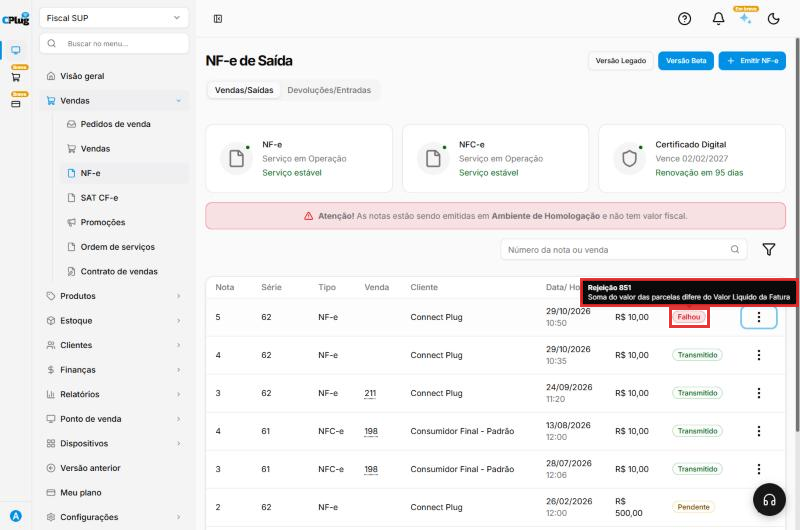
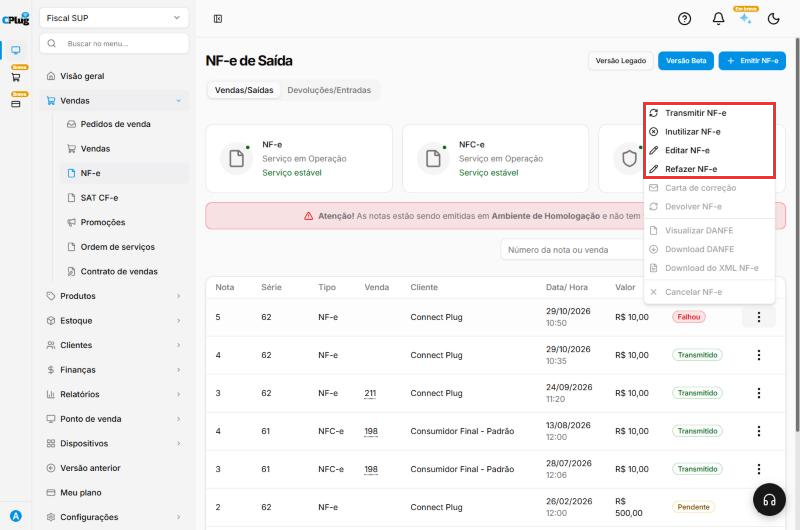
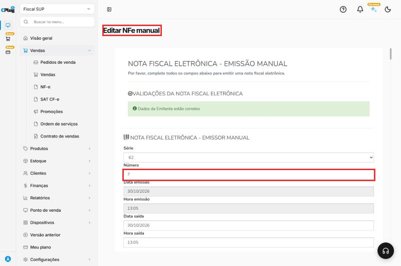
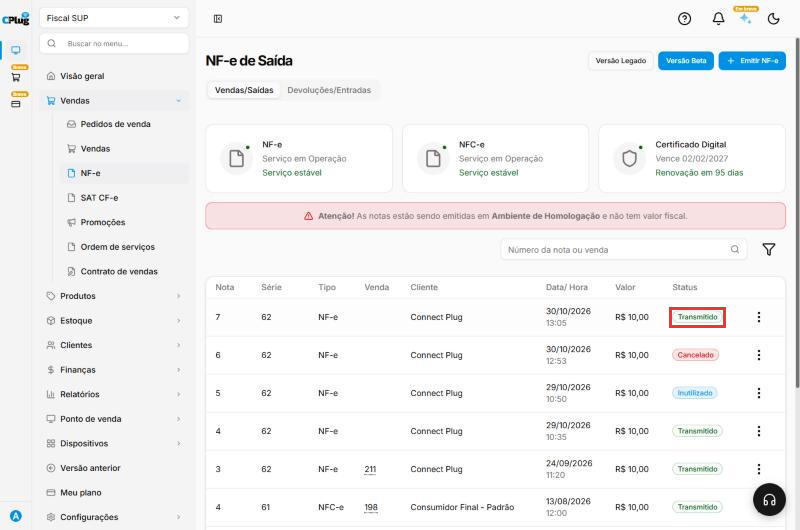
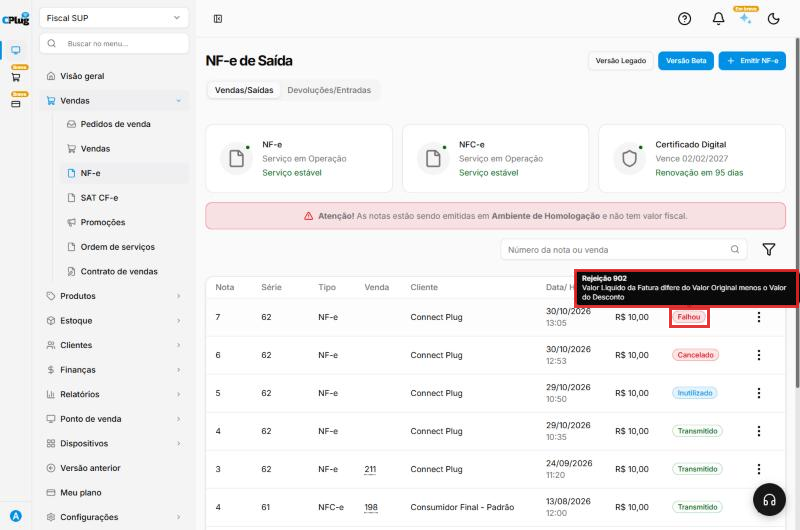
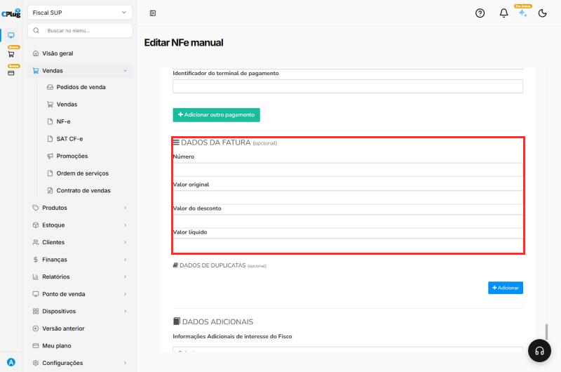

Como resolver uma nota fiscal rejeitada
Quando a Sefaz recusa uma nota, ela aparece com o status Falhou. A nota não foi autorizada: não tem valor fiscal e precisa ser corrigida e transmitida de novo.
Toda rejeição tem um número e uma mensagem que dizem exatamente o que está errado.
Entenda o conceito
O caminho de uma nota
| Status | O que significa | O que fazer |
|---|---|---|
| Pendente | Salva no sistema, ainda não enviada à Sefaz. | Transmitir. |
| Transmitido | Autorizada pela Sefaz. Vale como documento fiscal. | Entregar o DANFE/XML ao cliente. |
| Falhou | Enviada e recusada. Não vale como documento fiscal. | Ler o motivo, corrigir e transmitir de novo. |
| Cancelado / Inutilizado | A nota foi anulada / o número foi descartado. | Nada. Veja Como cancelar, inutilizar ou corrigir uma nota fiscal. |
Uma nota rejeitada não precisa ser cancelada: ela nunca foi autorizada. O número dela continua reservado, e você pode corrigir e transmitir com o mesmo número.
A Sefaz é um "conferente"
A Sefaz não sabe se a sua venda está certa; ela confere se a nota segue as regras: os números batem, os códigos existem, o cliente tem os dados exigidos. A rejeição é a lista do que não passou na conferência. Por isso a mensagem quase sempre diz qual campo corrigir.
Editar ou Refazer?
| Editar NF-e | Refazer NF-e | |
|---|---|---|
| Número | O mesmo. | O mesmo. |
| Data e hora de emissão | Mantém as originais. | Troca pela data e hora de agora. |
| Use quando | Corrigir a nota rejeitada (caminho deste manual). | A data original não serve mais e você quer refazer a nota hoje. |
Nota de devolução: confira a chave referenciada
No teste, ao abrir Editar NF-e ou Refazer NF-e de uma nota de devolução rejeitada, o campo Chaves de acesso da NF-e referenciada veio vazio, embora a nota tivesse sido enviada com a chave. Antes de salvar, cole a chave de novo. Sem ela, a devolução não é aceita.
Nos prints, o quadrado vermelho mostra onde você deve clicar.
Veja o motivo da rejeição
Em Vendas → NF-e, encontre a nota com o status Falhou e passe o mouse sobre ele. Aparece o número e a mensagem da rejeição.
No exemplo: Rejeição 851 - Soma do valor das parcelas difere do Valor Líquido da Fatura.

Corrija o problema
Use a tabela de rejeições comuns, mais abaixo, para entender o que corrigir. Em geral, o erro está em um destes lugares:
- no cadastro do cliente (CPF/CNPJ, Inscrição estadual, endereço);
- nos dados fiscais do produto (NCM, CFOP, ICMS);
- na configuração fiscal da empresa (regime, certificado, série);
- nos dados da própria nota (pagamento, fatura, frete).
Se o erro estava no cadastro (cliente, produto ou empresa), corrija o cadastro primeiro.
Depois, nos três pontinhos da nota, clique em Editar NF-e.

Abre a tela Editar NFe manual, com a nota preenchida e o mesmo número. Acerte o que a mensagem indica e clique em Salvar, no fim da tela. Aparece a mensagem de que a NF-e foi atualizada com sucesso.

Transmita de novo
Volte para Vendas → NF-e. Nos três pontinhos da nota, clique em Transmitir NF-e. Se a correção resolveu, o status muda para Transmitido.

Exemplo completo: Rejeição 902
-
A nota saiu com uma fatura de valor original R$ 10,00 e valor líquido R$ 5,00, sem desconto. A Sefaz recusou: Rejeição 902 - Valor Líquido da Fatura difere do Valor Original menos o Valor do Desconto.

-
Em Editar NF-e, os Dados da fatura foram apagados (a fatura é opcional, e a venda era à vista). A nota foi salva.

-
Em Transmitir NF-e, a nota foi autorizada (status Transmitido).
Não vai corrigir? Inutilize o número
Se você desistiu dessa nota (por exemplo, emitiu outra no lugar), inutilize o número dela. Assim a Sefaz sabe que esse número foi pulado de propósito. Veja Como cancelar, inutilizar ou corrigir uma nota fiscal.
Rejeições mais comuns
| Mensagem (resumida) | O que fazer |
|---|---|
| Soma do valor das parcelas difere do Valor Líquido da Fatura (851) | Acerte os Dados da fatura para bater com a soma das parcelas do pagamento, ou deixe a fatura em branco. |
| Valor Líquido da Fatura difere do Valor Original menos o Valor do Desconto (902) | Na fatura, o valor líquido precisa ser o valor original menos o desconto. Corrija ou deixe a fatura em branco. |
| Duplicidade de NF-e | O número já foi usado. Confira a série e o número atual em Configurações → Fiscal → Série de NF. |
| CSOSN incompatível com o regime / CST incompatível | O regime tributário da empresa não combina com o código de ICMS do produto. Simples Nacional usa CSOSN (3 números); regime normal usa CST (2 números). |
| IE do destinatário inválida ou não informada | Confira a Inscrição estadual e o Indicador de IE no cadastro do cliente. |
| NF-e sem informação da IE do destinatário (728) | A nota foi como se o cliente fosse contribuinte, sem IE. Comum ao preencher uma pessoa física direto na nota: escolha o cliente cadastrado (Indicação de IE 9 - Não contribuinte). Veja Como emitir uma NF-e de venda. |
| Destinatário da NF-e deve ser igual ao Emitente da NF referenciada (1194) | Na devolução de compra, o destinatário tem de ser o fornecedor que emitiu a nota original. Veja Como emitir uma NF-e de devolução. |
| NCM inexistente | Corrija o NCM do produto em Parâmetros fiscais. |
| CFOP não permitido / incompatível | Confira o CFOP: 5xxx para dentro do estado, 6xxx para outro estado. |
| Certificado vencido ou assinatura inválida | Envie um certificado válido em Configurações → Fiscal → Certificado digital. |
| Endereço / município do destinatário | Complete o endereço com CEP no cadastro do cliente. |
Quem define os códigos fiscais corretos (NCM, CFOP, CST/CSOSN) é o contador. Na dúvida, mande para ele a mensagem da rejeição.
Boas práticas
- Leia a mensagem inteira antes de mexer: o número e o texto dizem qual campo corrigir.
- Corrija na origem. Se o erro é do cadastro (cliente, produto, empresa), acerte o cadastro e a nota, para não repetir na próxima.
- Não deixe nota em Falhou parada. Corrija e transmita, ou inutilize o número se desistiu dela.
- Prefira Editar a Refazer para manter a data original da venda.
- Guarde as rejeições que se repetem e leve ao contador: elas mostram o que precisa mudar no cadastro.
Deu algum problema?
Corrigi e continua dando a mesma rejeição
Confira se a correção foi feita no lugar certo. Por exemplo, corrigir o cadastro do cliente não muda uma nota que já foi salva: edite a nota também.
A rejeição fala em certificado ou em serviço indisponível
No topo da tela NF-e de Saída, confira se os serviços da Sefaz estão em operação e se o certificado está válido. Se a Sefaz estiver fora do ar, tente de novo mais tarde.
Preciso cancelar a nota que falhou?
Não. Ela nunca foi autorizada, então não há o que cancelar. Corrija e transmita de novo, ou inutilize o número se não for usá-lo.
Relacionados: Como emitir uma NF-e de venda · Como emitir uma NF-e de devolução · Como cancelar, inutilizar ou corrigir uma nota fiscal · Como configurar os dados fiscais de um produto
nota rejeitada rejeição falhou nota recusada sefaz erro na nota 851 parcelas fatura duplicidade csosn cst incompatível ie inválida ncm inexistente cfop certificado vencido corrigir nota transmitir de novo editar nf-e